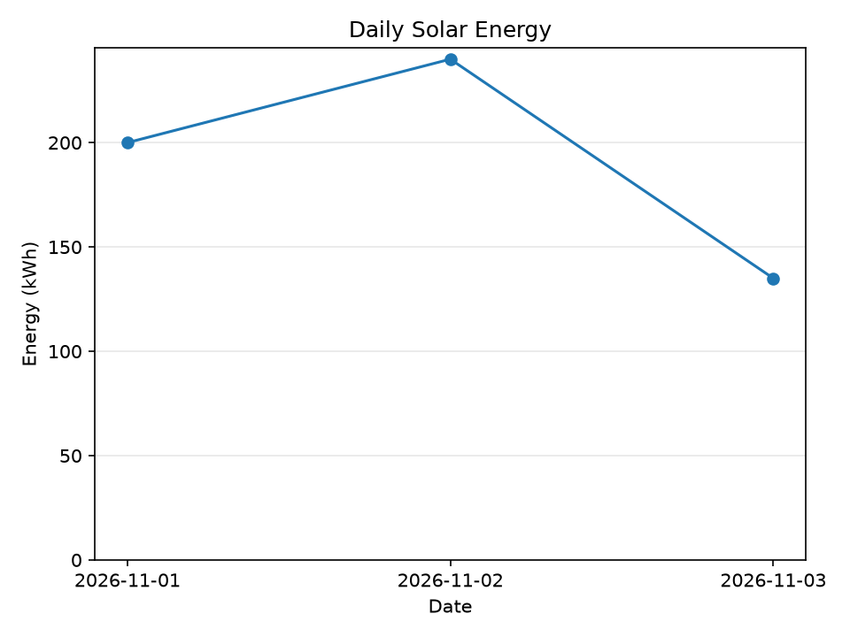

光伏发电数据分析
用 Python 将 CSV 和 Excel 光伏台账整理为发电量汇总和趋势图。
在 GitHub 查看项目代码样例结果
- 总发电量
- 575.0 kWh
- 日均发电量
- 191.7 kWh
- 有效天数
- 3 天
每日发电量趋势

查看计算方法和缺失数据
每日发电量等于平均功率乘以运行时长。11 月 4 日缺少功率，日均发电量按其余 3 天计算。
用 Python 将 CSV 和 Excel 光伏台账整理为发电量汇总和趋势图。
在 GitHub 查看项目代码
每日发电量等于平均功率乘以运行时长。11 月 4 日缺少功率，日均发电量按其余 3 天计算。